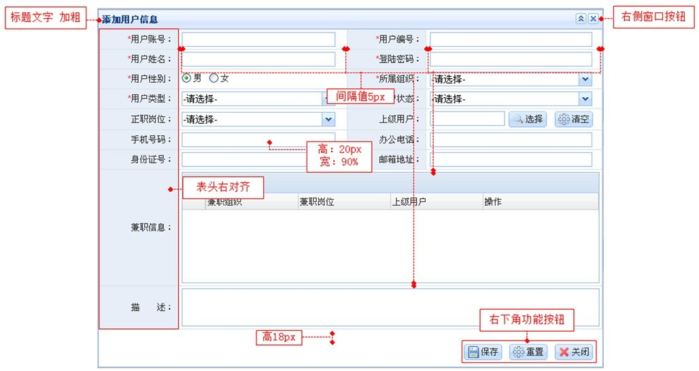

一、注意事项
fastUI控件库的引用：
fastDev替代“$”，避免和JQuery混淆；
Html标签的编写：
button、textbox、autoComplete采用<input>，而Select控件由于ie6下采用<input>自定义标签会引起页面重绘的问题，建议采用<div>:如
<div itype="Select" id="log.actionType" width="100%">
<div>-请选择-</div>
</div>
Dom元素的操作：
不建议直接通过JS操作由控件库生成的Dom元素，避免控件版本升级造成的兼容性问题。可以通过自定义ID进行操作。
样式的个性化：
不建议直接修改框架提供的打包css文件，而是利用css的优先级，重定义同名样式，覆盖框架提供的样式。
换肤的考虑支持：
框架的目录结构是支持换肤功能的，需要注意的是，在页面代码文件中，不要引用不同皮肤中的内容。
常见问题：
1、下拉树、下拉框、日历控件等弹出类控件默认inside属性为true，如果用在弹出页面里，而页面高度不够时，可设成false。但一般情况下不设置为false， 因为可能会导致一些跨域等问题。
2、异步树需同时满足数据源节点里包含asyn:true且配置了asyncDataSource两个要求才能实现异步。选人控件里要实现异步树也是一样。 但选人控件的异步数据源属性是treeAsyncSource。
3、表单里的控件不可缺少itype与id属性，否则表单读不到控件 。
4、如果使用了A标签，而href属性不是一个有效地址时,将值设置为"#@"不要设置为"#"或者"javascript:void(0)"
5、360浏览器兼容模式在非IE6的环境中默认使用的是IE7，如果系统没有做过IE7的测试，可在HTML页面的head标签内加上强制使用IE8的声明
(<meta http-equiv="X-UA-Compatible" content="IE=EmulateIE8" />)
二、 IE6下需要注意的问题
IE6下JavaScript解析和Dom元素渲染性能低下，所以针对页面较大、Dom元素较大的页面，推荐采用原生的html标签，获取最佳性能；如：部分很大的工作流页面，中间描述具体业务的、
嵌入到框架页面的html页面推荐采用原生的html标签进行编写。
IE6下存在Iframe内存泄露问题，所以建议项目中减少Iframe的使用。框架目前弹出窗默认采用Iframe的实现方式。建议采用ajax模式。详见示例中心示例。
带输入性质的一般用input来构建，宽度统一用iwidth。如果用width在ie6下会不兼容。
tabs控件在ie6下，默认是iframe模式，不会有选项卡的标题，如果需要标题，则设置tabs的ie6Mode为tabs。
三、界面规范
兵书云：“兵马未动、粮草先行”，在进行应用开发前，需先制定好规范。
弹出的提示信息：统一用框架的fastDev.alert()，替代window.alert()。弹出窗口按钮默认为右对齐。
Select、selectTree控件的默认内容： 统一用“-请选择-”。
dataGrid的页码（pageSizeList）默认不需要定义，采用默认值即可。DataGrid上工具栏按钮默认左对齐。
字体默认为12px。涉及到金额的地方，统一展现带两位小数。即使是0，也展现为0.00，且靠右对齐。
Js文件需要写注释。
下图展示的是界面规范:

四、 fastDev-import.js
统一的UI框架导入文件，包括样式、ui控件库、编译和通用内容的js文件引用。
五、关于JQuery
FastUI框架不依赖Jquery，不建议在项目的页面中引用Jquery库；FastUI Library 提供了常用的Jquery功能，如Ajax操作、选择器操作，用法基本同Jquery，核心代码直接来自Jquery。
http://fastui.talkweb.com.cn:8888/doc/index.html